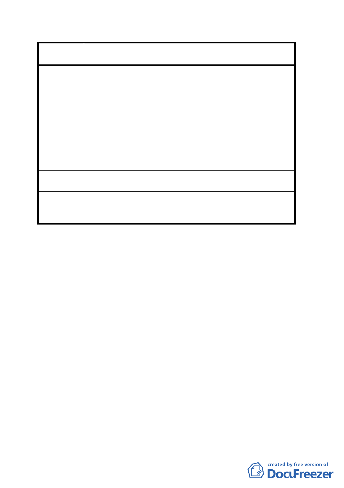

案
名
變更「修訂台北市主要計畫商業區（通盤檢討）計
畫案」內有關商業區變更回饋相關規定案
到所訂樓層及規模限制，對於存在已久既有旅館，應
酌情寬容，不應一體適用。
對於「修訂臺北市主要計畫商業區（通盤檢討）計畫」中
「建物變更使用」之「樓層及規模」限制，建議修正為：
原住宅區變更為商業區者，其建築物申請變更為非住宅使
建議辦法
用時，需符合下列條件之一：
一、 其同層及以下諸樓層需均非供住宅使用或取得同層
及以下諸樓層供住宅使用之住戶同意書。
二、 符合商業區核准條件且使用已達十年以上者，得不受
前項條件限制。
專案小組
審查結論
（本案於專案小組審查完竣後提出，無專案審查意見。）
委員會議
決議
本陳情地點目前仍屬於第三種住宅區，依法需整棟建築申
請才得做為旅館使用，關於其陳情議題，則由市府另案處
理。
討論事項六
案名：臺北市都市計畫容積移轉審查許可條件（草案）
說明：
一、提案單位：台北市政府
二、法源依據：都市計畫容積移轉實施辦法
三、本案係市府九十四年六月二十八日以府都綜 09413353700
號函送到會。
決議：本案請黃委員武達、張委員桂林、錢委員學陶、邊委員
泰明、陳委員武正、張委員樞、蘇委員瑛敏、黃呂委員
錦茹、顏委員愛靜、蔡委員淑瑩、張委員章得、陳委員
鴻明、陳委員威仁組成專案小組詳加審查再提會審議，
並請黃委員武達擔任專案小組召集人。
討論事項七
一七